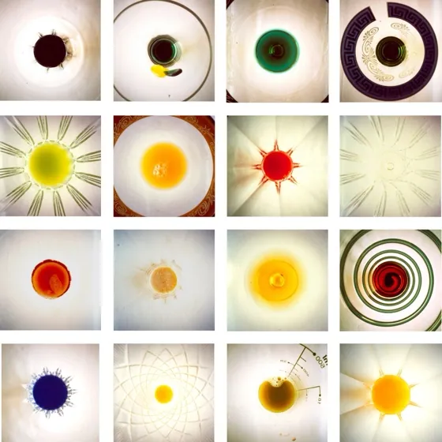
Aperitivo Stenopeico 2004 Fotografia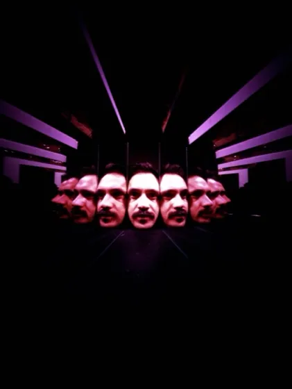
Seek Deep Inside… Remember What You Find 2006 Fotografia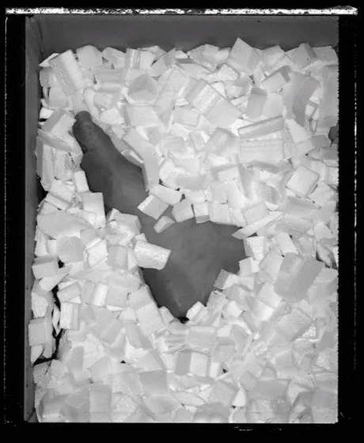
Spare Parts 2006 Fotografia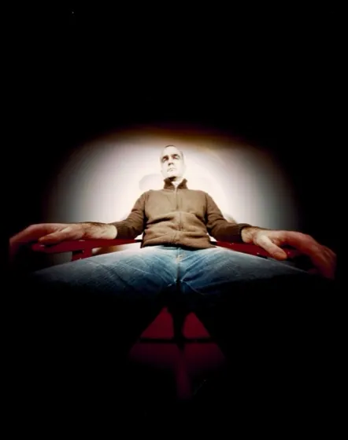
Red Chairs 2005–2007 Fotografia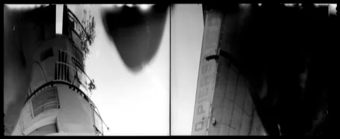
Cheat Your Eyes 2012 Luce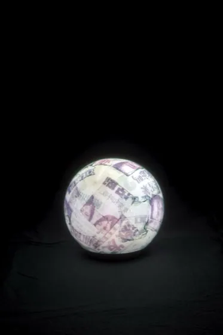
Emulsion Ball 2011 Luce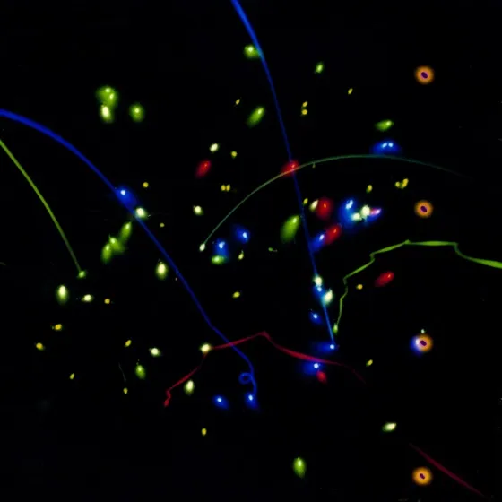
Esperienze Stenopeiche in una Camera Ludica 2008–2013 Luce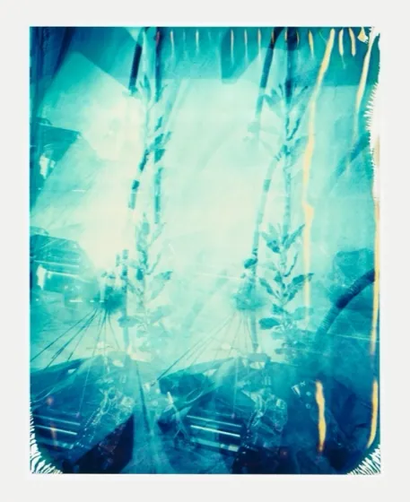
Disappearing 2008 Luce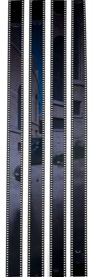
Where the Children Play 2008 Luce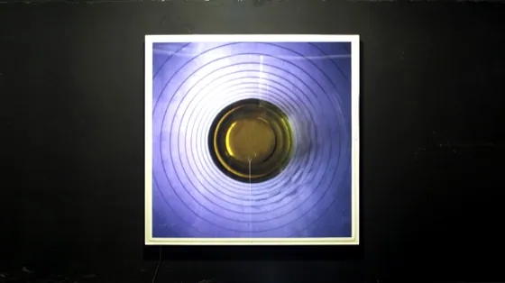
Aperitivo Stenopeico — Light Edition 2004 Luce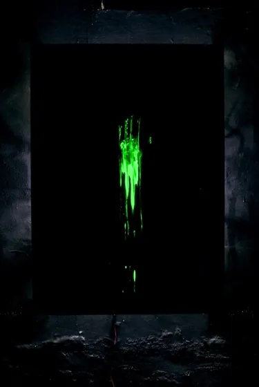
5th Sense 2007 Luce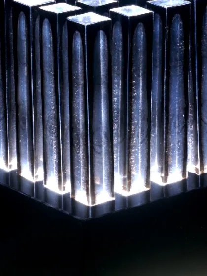
Index 2006 Luce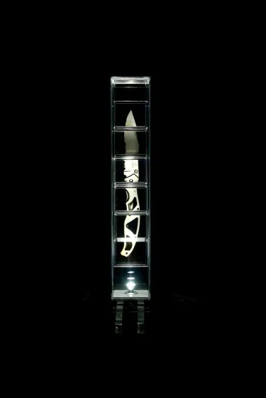
Cutting Light 2004 Luce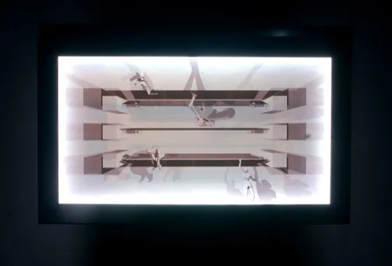
Angelo Glabro 2004 Luce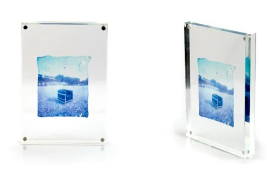
Emulsion Chairs 2011 Polaroid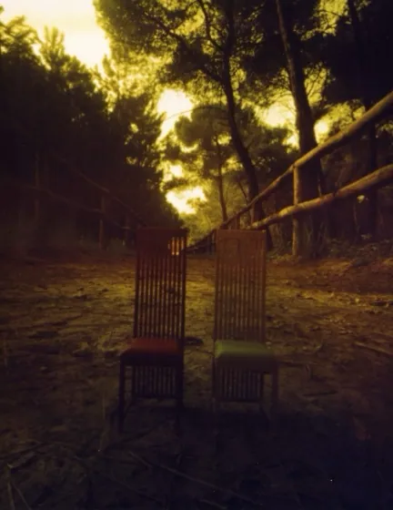
Seats 2006 Polaroid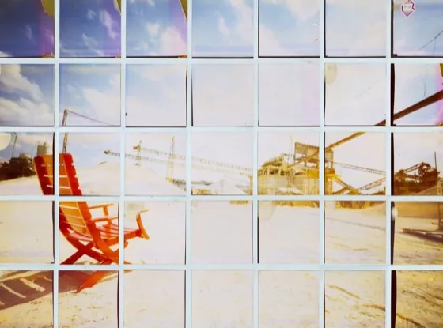
Two 2006 Polaroid Dripping City Dreams 2006 Polaroid Rosso Sedia 2006 Polaroid Aperitivo Stenopeico — Pola Edition 2006 Polaroid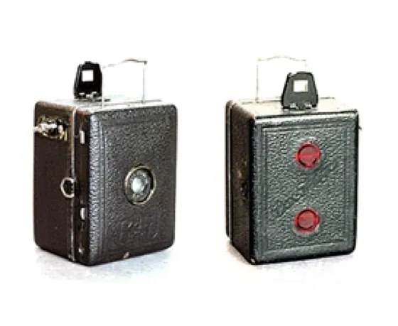
P.I.M.P. My Camera in corso Camere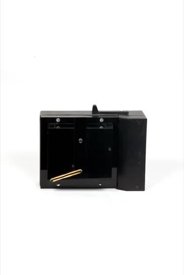
SX PIN Camere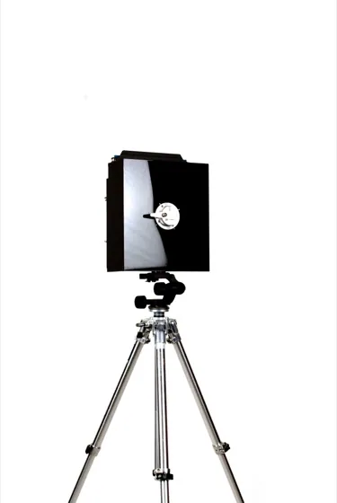
Component Pin Camere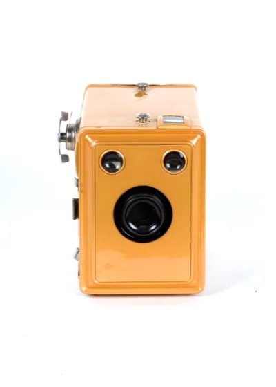
Return Cam Camere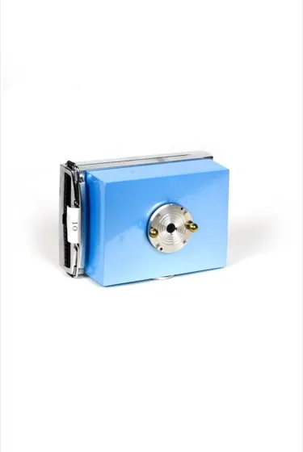
66X Cam Camere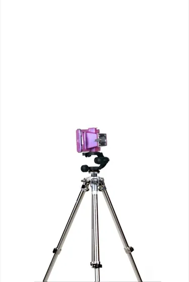
Pink Phanter Camere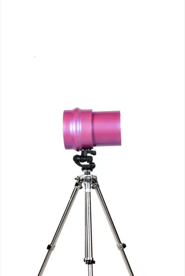
Cheat Pin Camere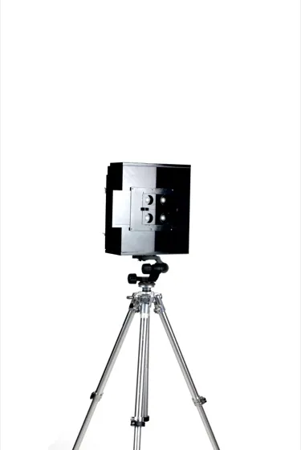
Four Eyes 2011 Camere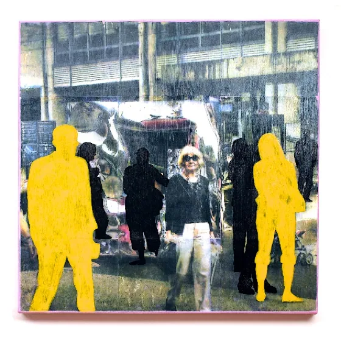
Walking 2006 Pittura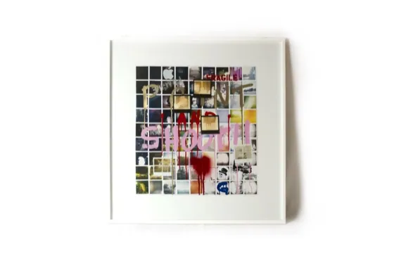
Pola Colors 2011 Pittura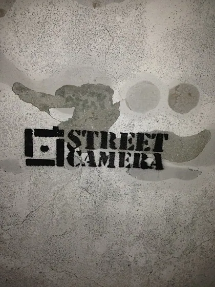
Street Gallery 2008–2013 Street Sensibili alla Luce 2011 Video Emulsion Ball — Video Video Around Me 2001 Video Sfericamente 2003 Video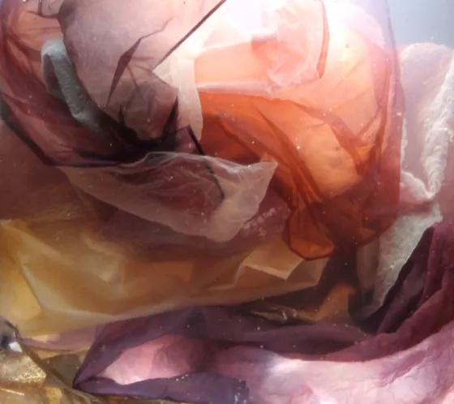
Inner Trip Video Arte in Luce 2009 Video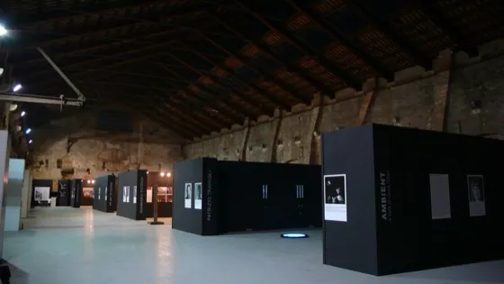
Ambient — Arsenale di Venezia 2010 Luce